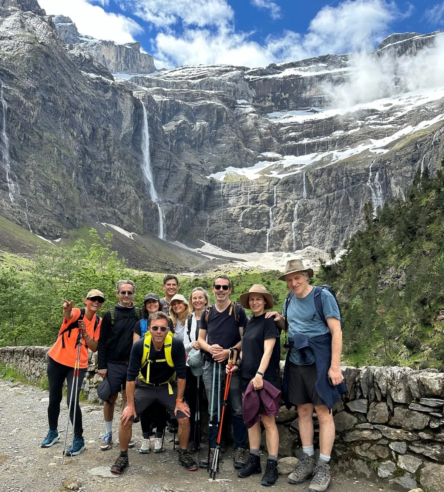
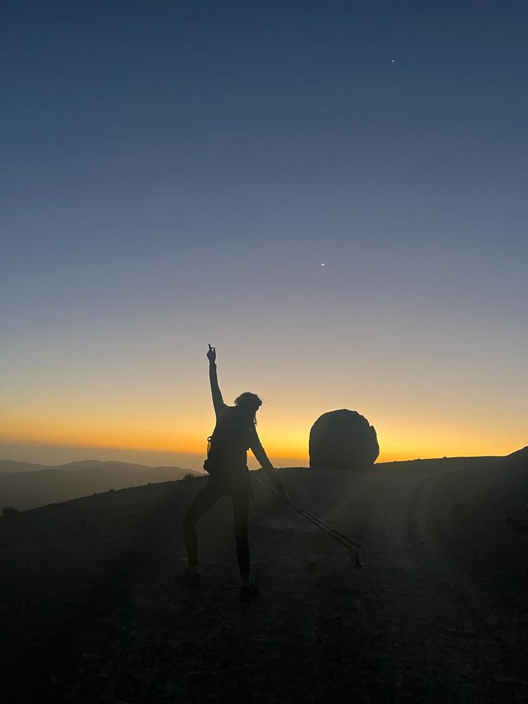
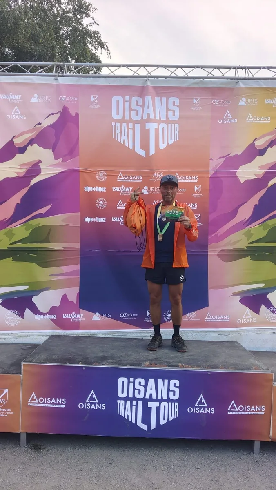
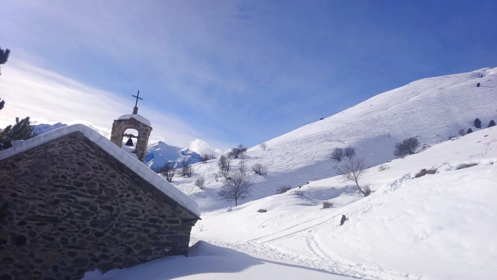
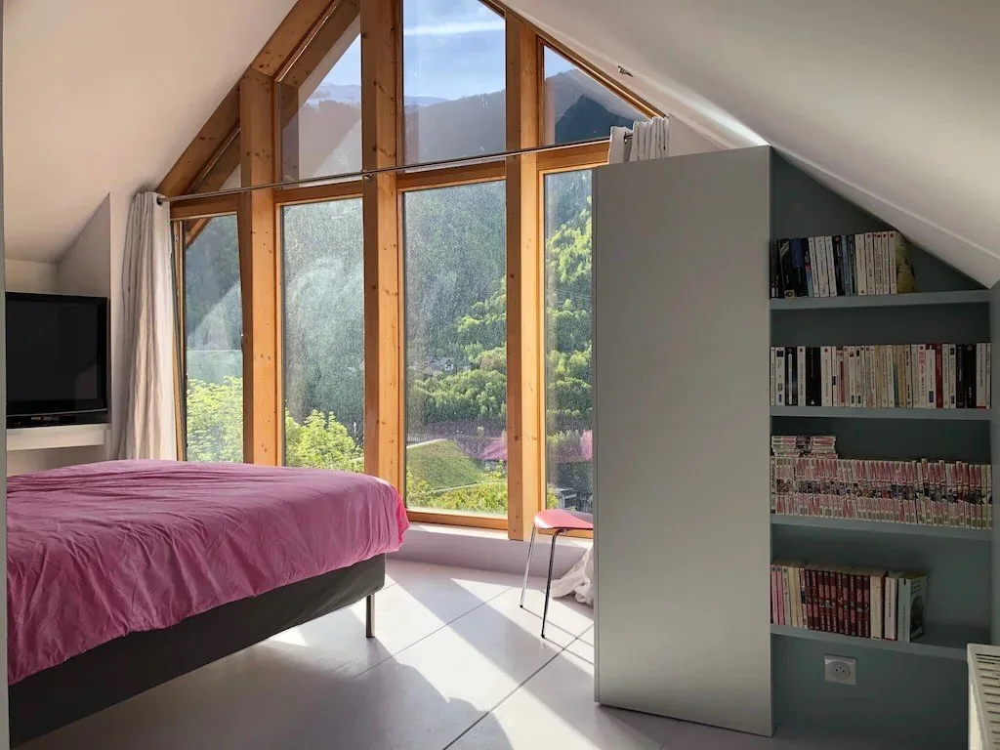

Vivre une aventure
1/2 journée · journée · itinérance — à pied / raquettes / vélo.
Randonnées, aventures et expériences en montagne.
Printemps • Été • Automne
J'ai toujours été passionné par le milieu montagnard mais c'est en 2020, après 32 ans dans la finance, que j'ai changé de vie. En parallèle de la restauration d'une ancienne grange à Allemond (Isère) pour en faire un gîte, j'ai engagé plusieurs formations, un Brevet Fédéral et un Diplôme d'État d'Alpiniste, afin de devenir accompagnateur en montagne et de pouvoir ainsi encadrer toutes les personnes souhaitant découvrir et s'évader en montagne.
En montagne, les paysages y sont vastes, les sites d'accès difficiles, souvent étendus ; toutes ces terres laissées à elles-mêmes nous donnent une impression de nature libre et sauvage. Décor prestigieux, climat, ensoleillement, calme, qualité de l'air, équilibres écologiques respectés dans des paysages de tradition en font une région de loisirs et de détente sans équivalent.
Chaque sortie en montagne est une occasion de partager des émotions profondes et sincères, d'apprendre de la nature, de progresser humainement et physiquement. Vous recherchez des vacances actives, du tourisme sportif, des séjours immersifs ou simplement du bien-être et la découverte d'environnement naturel exceptionnel.
En construisant des projets adaptés et personnalisés. Qu'ils soient courts, longs ou itinérants, personnels ou professionnels, je mets une attention particulière à ce qu'ils soient le plus durables et respectueux des milieux sensibles traversés.
Vous · votre famille · vos amis
Vos équipes · vos clients
Lieu : Massifs de l'Oisans (Belledonne, Grandes Rousses, Taillefer, Arves, Écrins)
Durée : demi-journée ou journée complète
Âge minimum : dès 7 ans
Location de matériel possible : bâtons, raquettes…
| Format | Individuel | Groupe | ||
|---|---|---|---|---|
| Adultes | Enfants | 1–5 personnes | 6–12 personnes | |
| 1/2 journée | 30 € | 25 € | 130 € | 160 € |
| Journée | 40 € | 30 € | 230 € | 260 € |

1/2 journée · journée · itinérance — à pied / raquettes / vélo.

Remise en forme, relaxation, autonomie, bivouac.

Plan d’entraînement, orientation, techniques sur le terrain.

Culture, architecture, faune, flore, géologie.

Camp de base idéal pour découvrir l'Oisans.